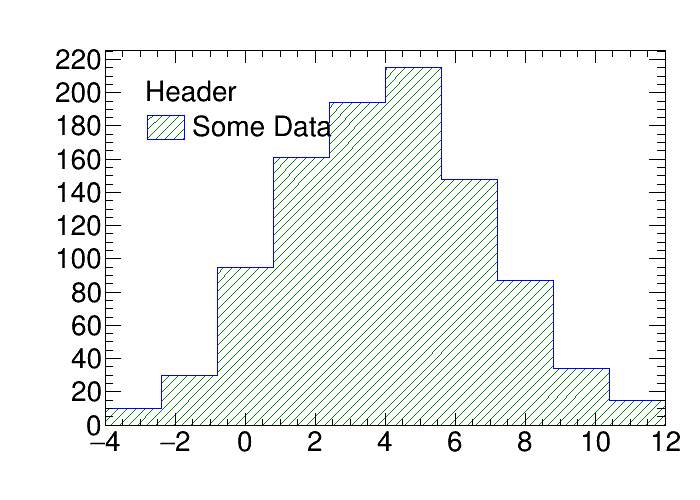

Working with ROOT histograms¶
This example demonstrates how to create and work with ROOT histogram in rootpy.
Script output:
Hist_fYSGC5KPmeegsaJBsMbXdR
my hist
Some Data
1.0
Python source code: plot_hist.py
print(__doc__)
from rootpy.extern.six.moves import range
from rootpy.plotting import Hist, Hist2D, Hist3D, HistStack, Legend, Canvas
from rootpy.interactive import wait
import random
# create a simple 1D histogram with 10 constant-width bins between 0 and 1
h_simple = Hist(10, 0, 1)
print(h_simple.name)
# If the name is not specified, a UUID is used so that ROOT never complains
# about two histograms having the same name.
# Alternatively you can specify the name (and the title or any other style
# attributes) in the constructor:
h_simple = Hist(10, -4, 12, name='my hist', title='Some Data',
drawstyle='hist',
legendstyle='F',
fillstyle='/')
# fill the histogram
for i in range(1000):
# all ROOT CamelCase methods are aliased by equivalent snake_case methods
# so you can call fill() instead of Fill()
h_simple.Fill(random.gauss(4, 3))
# easily set visual attributes
h_simple.linecolor = 'blue'
h_simple.fillcolor = 'green'
h_simple.fillstyle = '/'
# attributes may be accessed in the same way
print(h_simple.name)
print(h_simple.title)
print(h_simple.markersize)
# plot
canvas = Canvas(width=700, height=500)
canvas.SetLeftMargin(0.15)
canvas.SetBottomMargin(0.15)
canvas.SetTopMargin(0.10)
canvas.SetRightMargin(0.05)
h_simple.Draw()
# create the legend
legend = Legend([h_simple], pad=canvas,
header='Header',
leftmargin=0.05,
rightmargin=0.5)
legend.Draw()
# 2D and 3D histograms are handled in the same way
# the constructor arguments are repetitions of #bins, left bound, right bound.
h2d = Hist2D(10, 0, 1, 50, -40, 10, name='2d hist')
h3d = Hist3D(3, -1, 4, 10, -1000, -200, 2, 0, 1, name='3d hist')
# variable-width bins may be created by passing the bin edges directly:
h1d_variable = Hist([1, 4, 10, 100])
h2d_variable = Hist2D([2, 4, 7, 100, 200], [-100, -50, 0, 10, 20])
h3d_variable = Hist3D([1, 3, 10], [20, 50, 100], [-10, -5, 10, 20])
# variable-width and constant-width bins can be mixed:
h2d_mixed = Hist2D([2, 10, 30], 10, 1, 5)
# wait for you to close all open canvases before exiting
# wait() will have no effect if ROOT is in batch mode:
# ROOT.gROOT.SetBatch(True)
wait()
Total running time of the example: 0.08 seconds